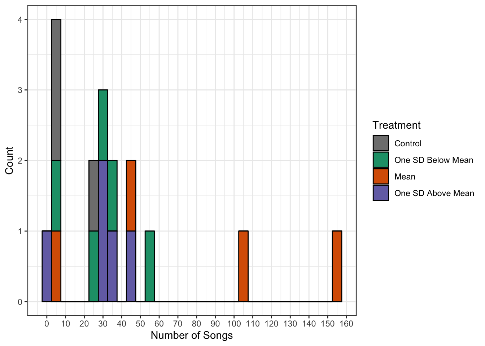
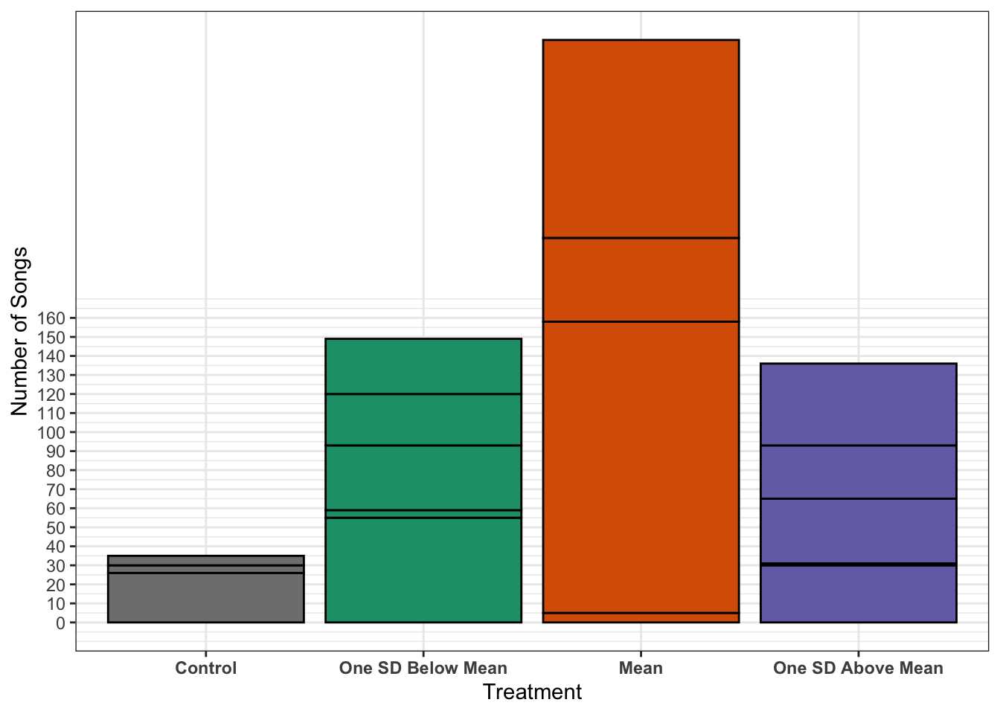
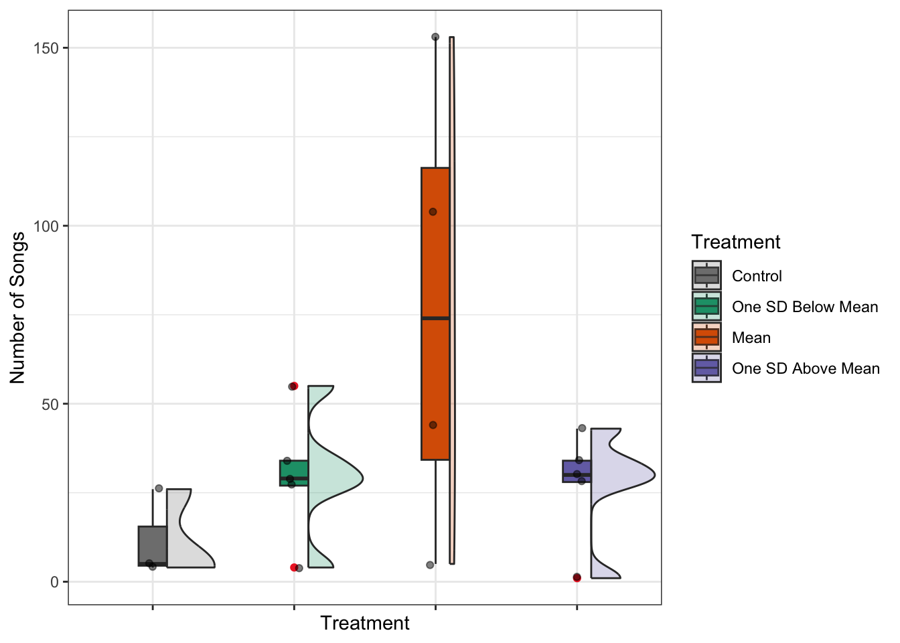
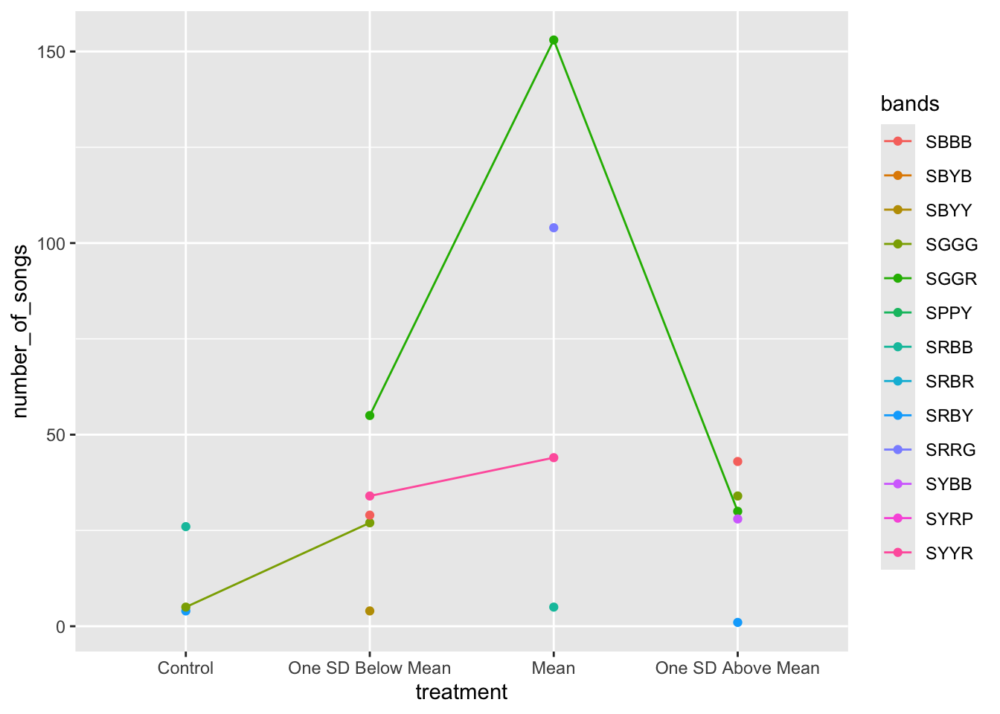
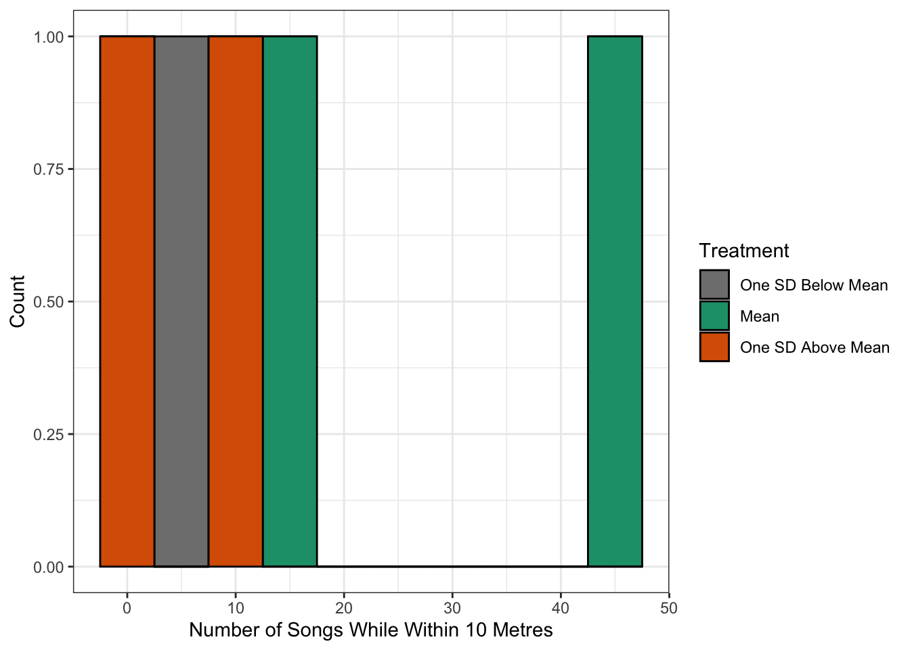
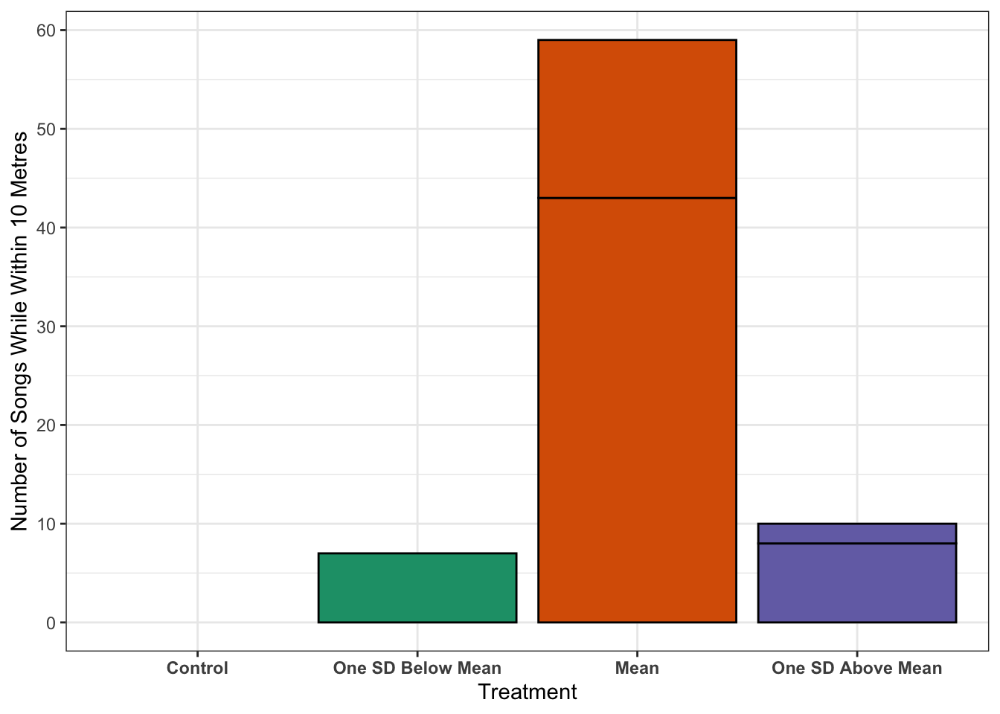
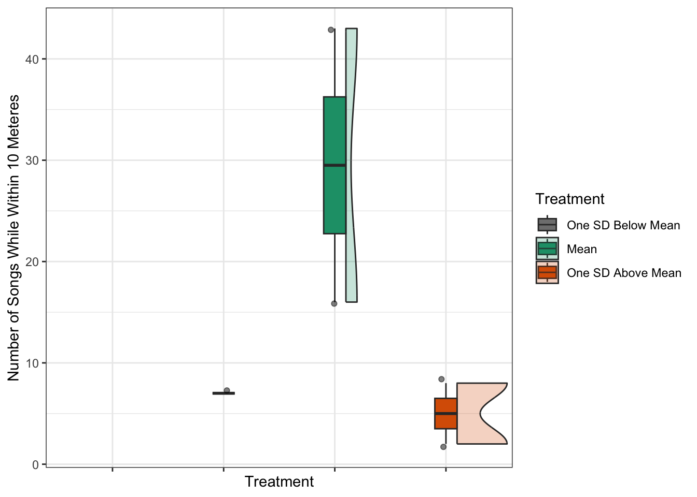

data_files = list.files("data")
data_files = data_files[str_detect(data_files, "\\.txt")]DEJU playback study data analysis
Data Import and Joining.
File List Creation.
Firstly, create a vector of all files in the data folder of the github repository which includes a readme.md file.
Then select only the .txt files to import into R.
Master Raw Dataset Creation.
A lot of things happen in the next code chunk, to make it easier to follow the code chunk does the following:
- Creates an empty data frame (tibble) that will eventually contain the full data set.
- Begins a for loop to iterate through each file in the file list.
- Reads in a data file, labeling the columns correctly.
- Calculates the duration of each annotation in the
.txtfile from the onset and offset times. - Adds the file name from which each row came from to each of the rows of the data frame.
- Separates the file name into the relevant information.
- Fixes the formatting of the dates and times.
- Creates a column of estimated distances
- Adds the rows into the master data set.
# 1
deju_data = tibble()
# 2
for(i in 1:length(data_files)) {
# 3
dejuraw = as_tibble(read.table(paste0("data/", data_files[i]), sep = "\t", quote = "", col.names = c("onset", "offset", "annotation")))
# 4
deju_rtj = dejuraw %>%
mutate(duration = offset - onset) %>%
relocate(duration, .after = offset) %>%
# 5
mutate(file_name = data_files[i]) %>%
mutate(file_name = str_remove(file_name, "\\.txt")) %>%
# 6
separate_wider_delim(col = file_name, delim = "_", names = c("recording_date", "recording_start_time", "bands", "treatment")) %>%
# 7
mutate(recording_date = ymd(recording_date)) %>%
mutate(recording_start_time = str_replace(recording_start_time, "(\\d\\d)(\\d\\d)", "\\1:\\2")) %>%
mutate(datetime = as.POSIXct(paste(recording_date, recording_start_time, sep = " " ))) %>%
relocate(datetime, .before = recording_start_time) %>%
# 8
mutate(
estimated_distance_of_focal_male = if_else(
str_detect(annotation, "^\\d+m$"),
str_remove(annotation, "m$"),
NA_character_
)
) %>%
fill(estimated_distance_of_focal_male, .direction = "down")%>%
mutate(estimated_distance_of_focal_male = as.numeric(estimated_distance_of_focal_male))%>%
select(-recording_start_time)
# 9
deju_data = bind_rows(deju_data, deju_rtj)
}Data Cleaning
Number of Songs.
The following code chunk creates a new tibble that counts the number of times the focal male was heard singing during each trial.
The code does the following:
- Starts with the master raw data set.
- Filters for annotations where the focal male was heard singing.
- Groups the data by bird band combination and by treatment.
- Counts the number of song annotations in each trial, and ungroups the output.
# 1
songs = deju_data %>%
# 2
filter(str_detect(annotation, "Focalsong")) %>%
# 3
group_by(bands, treatment) %>%
# 4
summarise(number_of_songs = n(), .groups = "drop")Minimum Distance.
The following code chunk calculates the closest distance that the focal male approached the speaker during each trial.
The code does the following:
- Starts with the master raw data set.
- Groups the data by bird band combination and treatment.
- Calculates the minimum estimated distance for each trial, returning a missing value instead of
Infif no distance was recorded during the trial. - Ungroups the output.
# 1
minimum_distance = deju_data %>%
# 2
group_by(bands, treatment) %>%
# 3
summarise(minimum_distance = if(all(is.na(estimated_distance_of_focal_male))) {
NA_real_
} else {
min(estimated_distance_of_focal_male, na.rm = TRUE)
# 4
}, .groups = "drop"
)Time to Approach Within 10 Metres
The following chunk calculates how long it took for the focal male to approach within 10 metres of the speaker after the playback started.
The code does the following:
- Starts with the master raw data set.
- Groups the data by bird band combination and treatment.
- Finds the onset time of the start of the playback stimulus.
- Finds the first time after the start of the playback stimulus that the focal male is within 10 metres.
- Returns a missing value if the bird is never found within 10 metres.
- Subtracts the playback start time from the first time that the focal male is within 10 metres.
- Ungroups the output.
# 1
time_to_10m = deju_data %>%
# 2
group_by(bands, treatment) %>%
summarise(
# 3
pbstart_time = first(onset[annotation == "Pbstart"]),
# 4
first_time_within_10 = if_else(any(estimated_distance_of_focal_male <= 10, na.rm = TRUE),
first(onset[estimated_distance_of_focal_male <= 10], na_rm = TRUE),
# 5
NA_real_),
# 6
time_to_approach_10m = first_time_within_10 - pbstart_time,
# 7
.groups = "drop"
)Time Spent Within 10 Metres.
This chunk calculates the total amount of time the focal male spent within 10 metres of the speaker during each trial.
The code does the following:
- Starts with the master raw data set.
- Groups the data by bird band combination and treatment.
- Creates columns of both the previous and the next distance annotation.
- Determines if the Focal Male is moving in or out of a the 10 metre range.
- Filters the data for only the times the focal male is moving.
- Creates a column identifying which direction the focal male is moving (in or out of 10 metres).
- Creates a column specifying the amount of time the focal male spent within 10 metres of the speaker.
- Sums the amount of time spent within 10 metres (if multiple instances per bird per trial).
- Ungroups the output.
# 1
time_within_10_metres = deju_data %>%
# 2
group_by(bands, treatment) %>%
# 3
mutate(previous_distance = lag(estimated_distance_of_focal_male)) %>%
mutate(next_distance = lead(estimated_distance_of_focal_male)) %>%
# 4
mutate(move = if_else(estimated_distance_of_focal_male <= 10 & (previous_distance > 10 | is.na(previous_distance)) | estimated_distance_of_focal_male > 10 & previous_distance <= 10, "yes", "no")) %>%
# 5
filter(move == "yes") %>%
# 6
mutate(direction = if_else(previous_distance > estimated_distance_of_focal_male, "in", "out")) %>%
# 7
mutate(time_spent = if_else(direction == "in", NA_real_, onset - lag(onset))) %>%
# 8
summarise(time_within_10_metres = sum(time_spent, na.rm = TRUE),
# 9
.groups = "drop")Number of Songs Within 10 Metres.
The following chunk calculates how many times the focal male was heard singing while estimated to be within 10 metres of the speaker.
The code does the following: 1. Starts with the master raw data set. 2. Groups the data by bird band combination and treatment. 3. Filters the data for only when the focal male is estimated to be within 10 metres of the playback speaker. 4. Filters the data for only when the focal male can be heard singing. 5. Counts the number of song annotations within 10 metres. 6. Ungroups the output.
# 1
number_of_songs_within_10_metres = deju_data %>%
# 2
group_by(bands, treatment) %>%
# 3
filter(estimated_distance_of_focal_male < 10) %>%
# 4
filter(str_detect(annotation, "Focalsong")) %>%
# 5
summarise(number_of_songs_while_within_10_meters = length(annotation),
# 6
.groups = "drop")Number of Physical Attacks.
The following code chunk creates a new tibble that counts the number of times the focal male was seen physically attacking (flying over) the playback speaker during each trial.
The code does the following:
- Starts with the master raw data set.
- Filters for annotations where the focal male was seen physically attacking (flying over) the playback speaker.
- Groups the data by bird band combination and by treatment.
- Counts the number of physical attack annotations in each trial, and ungroups the output.
# 1
physical_attacks = deju_data %>%
# 2
filter(str_detect(annotation, "Flyover")) %>%
# 3
group_by(bands, treatment) %>%
# 4
summarise(physical_attacks = n(), .groups = "drop")Date and Time Extraction.
The following chunk creates a tibble of the dates and times of each trial.
The code does the following:
- Starts with the master raw data set.
- Groups the data by bird bands and treatment.
- Creates a Column for both the date and time of each trial.
- Ungroups the output.
- Fixes the formatting of the time column.
# 1
date_and_time = deju_data %>%
# 2
group_by(bands, treatment) %>%
# 3
summarise(date_of_trial = first(as_date(datetime)),
time_of_trial = first(format(datetime, "%H:%M:%S")),
# 4
.groups = "drop") %>%
# 5
mutate(time_of_trial = as_hms(time_of_trial))Counting the Number of Stimuli
The following code chunk creates a data frame of the number of stimuli for each bird in each treatment condition.
The code does the following
- Starts with the master raw data set.
- Groups the data by bird bands and treatment.
- Filters the annotation column for only the instances where the annotation is “Pbstim”
- Counts the number of rows.
- Ungroups the data.
# 1
number_of_stimuli = deju_data %>%
# 2
group_by(bands, treatment) %>%
# 3
filter(str_detect(annotation, "Pbstim")) %>%
# 4
summarise(number_of_stimuli = n(),
# 5
.groups = "drop")Creation of Compressed Dataset.
The following chunk creates a compressed summary data set with one row for each bird in each treatment condition.
The code does the following:
- Creates a vector of all focal male band combinations.
- Creates a vector of all treatment conditions.
- Creates every possible combination of bird and treatment.
- Joins the summary metrics into one compressed dataset.
# 1
dark_eyed_juncos = c("SRBB", "SGGR", "SBYY", "SYYR", "SBYB", "SRBY", "SGGG", "SYBB", "SBBB", "SPPY", "SRBR", "SYRP", "SRRG")
# 2
conditions = c("Control", "10", "16", "22")
# 4
temp = c()
for(i in dark_eyed_juncos) {
for(j in conditions) {
temp = c(temp, paste0(i, "_", j))
}
}
# 5
cleaned_summary_dataset = tibble(bird_condition = temp) %>%
separate(col = bird_condition, into = c("bands", "treatment")) %>%
left_join(date_and_time, by = c("bands", "treatment")) %>%
left_join(songs, by = c("bands", "treatment")) %>%
left_join(minimum_distance, by = c("bands", "treatment")) %>%
left_join(time_to_10m, by = c("bands", "treatment")) %>%
left_join(time_within_10_metres, by = c("bands", "treatment")) %>%
left_join(number_of_songs_within_10_metres, by = c("bands", "treatment")) %>%
left_join(physical_attacks, by = c("bands", "treatment")) %>%
left_join(number_of_stimuli, by = c("bands", "treatment")) %>%
mutate(treatment = recode_factor(treatment,
"Control" = "Control",
"22" = "One SD Below Mean",
"16" = "Mean",
"10" = "One SD Above Mean",
.ordered = TRUE
)) %>%
relocate(time_of_trial, .before = bands) %>%
relocate(date_of_trial, .before = time_of_trial) %>%
select(-c(pbstart_time, first_time_within_10))Exploring the Cleaned Data
Number of Songs Graphs
ggplot(cleaned_summary_dataset, aes(x = number_of_songs, fill = treatment)) +
geom_histogram(
binwidth = 5,
colour = "black",
) +
labs(
x = "Number of Songs",
y = "Count",
fill = "Treatment"
) +
scale_x_continuous(breaks = seq(0, ceiling(max(cleaned_summary_dataset$number_of_songs, na.rm = TRUE)/10)*10, 10)) +
theme_bw() +
scale_fill_manual(values = c("gray50", "#1b9e77","#d95f02", "#7570b3" ))Warning: Removed 35 rows containing non-finite outside the scale range
(`stat_bin()`).
max(cleaned_summary_dataset$number_of_songs, na.rm = TRUE)[1] 153ggplot(cleaned_summary_dataset, aes(x = treatment, y = number_of_songs, fill = treatment)) +
geom_col(colour = "black") +
scale_y_continuous(breaks = seq(0, ceiling(max(cleaned_summary_dataset$number_of_songs, na.rm = TRUE)/10)*10, 10)) +
labs(
x = "Treatment",
y = "Number of Songs",
fill = "Treatment"
) +
scale_fill_manual(values = c("gray50", "#1b9e77","#d95f02", "#7570b3" ))+
theme_bw() +
theme(legend.position = "none", axis.text.x = element_text(face = "bold"))Warning: Removed 35 rows containing missing values or values outside the scale range
(`geom_col()`).
cleaned_summary_dataset %>%
group_by(treatment) %>%
summarise(n = sum(number_of_songs, na.rm = TRUE))# A tibble: 4 × 2
treatment n
<ord> <int>
1 Control 35
2 One SD Below Mean 149
3 Mean 306
4 One SD Above Mean 136ggplot(cleaned_summary_dataset,
aes(x = treatment,y = number_of_songs)) +
geom_boxplot(aes(fill = treatment),
width = 0.2,
outlier.colour = "firebrick2") +
geom_violinhalf(aes(fill = treatment),
alpha = 0.25,
position = position_nudge(x = 0.10),) +
geom_jitter(alpha = 0.5,
width = 0.05) +
scale_fill_manual(values = c("gray50", "#1b9e77","#d95f02", "#7570b3" )) +
labs(
x = "Treatment",
y = "Number of Songs",
fill = "Treatment"
) +
theme_bw() +
theme(axis.text.x = element_blank())Warning: Removed 35 rows containing non-finite outside the scale range
(`stat_boxplot()`).Warning: Removed 35 rows containing non-finite outside the scale range
(`stat_ydensity()`).Warning: Removed 35 rows containing missing values or values outside the scale range
(`geom_point()`).
ggplot(data = cleaned_summary_dataset, aes(x = treatment, y = number_of_songs, group = bands, color = bands)) +
geom_point() +
geom_line()Warning: Removed 35 rows containing missing values or values outside the scale range
(`geom_point()`).Warning: Removed 30 rows containing missing values or values outside the scale range
(`geom_line()`).
Number of Songs While Within 10 Metres Graphs
ggplot(cleaned_summary_dataset, aes(x = number_of_songs_while_within_10_meters, fill = treatment)) +
geom_histogram(
binwidth = 5,
colour = "black",
) +
labs(
x = "Number of Songs While Within 10 Metres",
y = "Count",
fill = "Treatment"
) +
scale_x_continuous(breaks = seq(0, ceiling(max(cleaned_summary_dataset$number_of_songs, na.rm = TRUE)/10)*10, 10)) +
theme_bw() +
scale_fill_manual(values = c("gray50", "#1b9e77","#d95f02", "#7570b3" ))Warning: Removed 47 rows containing non-finite outside the scale range
(`stat_bin()`).
max(cleaned_summary_dataset$number_of_songs_while_within_10_meters, na.rm = TRUE)[1] 43ggplot(cleaned_summary_dataset, aes(x = treatment, y = number_of_songs_while_within_10_meters, fill = treatment)) +
geom_col(colour = "black") +
scale_y_continuous(breaks = seq(0, ceiling(max(cleaned_summary_dataset$number_of_songs, na.rm = TRUE)/10)*10, 10)) +
labs(
x = "Treatment",
y = "Number of Songs While Within 10 Metres",
fill = "Treatment"
) +
scale_fill_manual(values = c("gray50", "#1b9e77","#d95f02", "#7570b3" ))+
theme_bw() +
theme(legend.position = "none", axis.text.x = element_text(face = "bold"))Warning: Removed 47 rows containing missing values or values outside the scale range
(`geom_col()`).
cleaned_summary_dataset %>%
group_by(treatment) %>%
summarise(n = sum(number_of_songs_while_within_10_meters, na.rm = TRUE))# A tibble: 4 × 2
treatment n
<ord> <int>
1 Control 0
2 One SD Below Mean 7
3 Mean 59
4 One SD Above Mean 10ggplot(cleaned_summary_dataset,
aes(x = treatment,y = number_of_songs_while_within_10_meters)) +
geom_boxplot(aes(fill = treatment),
width = 0.2,
outlier.colour = "firebrick2") +
geom_violinhalf(aes(fill = treatment),
alpha = 0.25,
position = position_nudge(x = 0.10),) +
geom_jitter(alpha = 0.5,
width = 0.05) +
scale_fill_manual(values = c("gray50", "#1b9e77","#d95f02", "#7570b3" )) +
labs(
x = "Treatment",
y = "Number of Songs While Within 10 Meteres",
fill = "Treatment"
) +
theme_bw() +
theme(axis.text.x = element_blank())Warning: Removed 47 rows containing non-finite outside the scale range
(`stat_boxplot()`).Warning: Removed 47 rows containing non-finite outside the scale range
(`stat_ydensity()`).Warning: Groups with fewer than two datapoints have been dropped.
ℹ Set `drop = FALSE` to consider such groups for position adjustment purposes.Warning: Removed 47 rows containing missing values or values outside the scale range
(`geom_point()`).